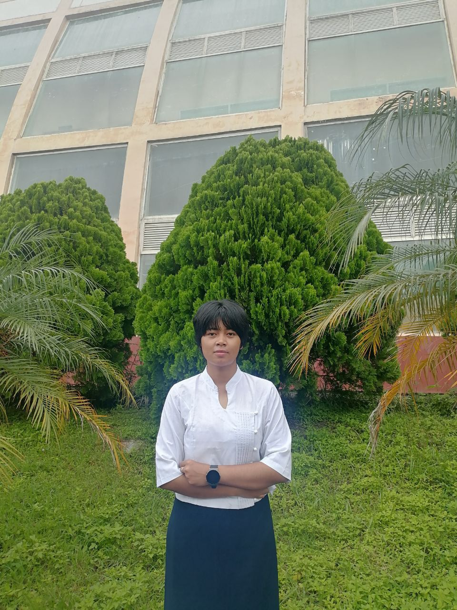
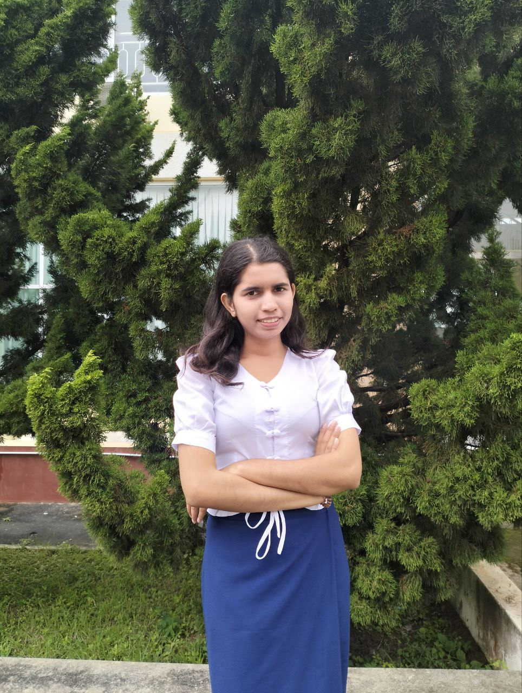
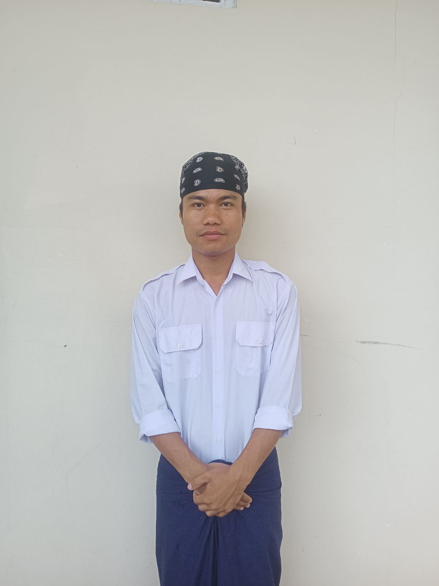
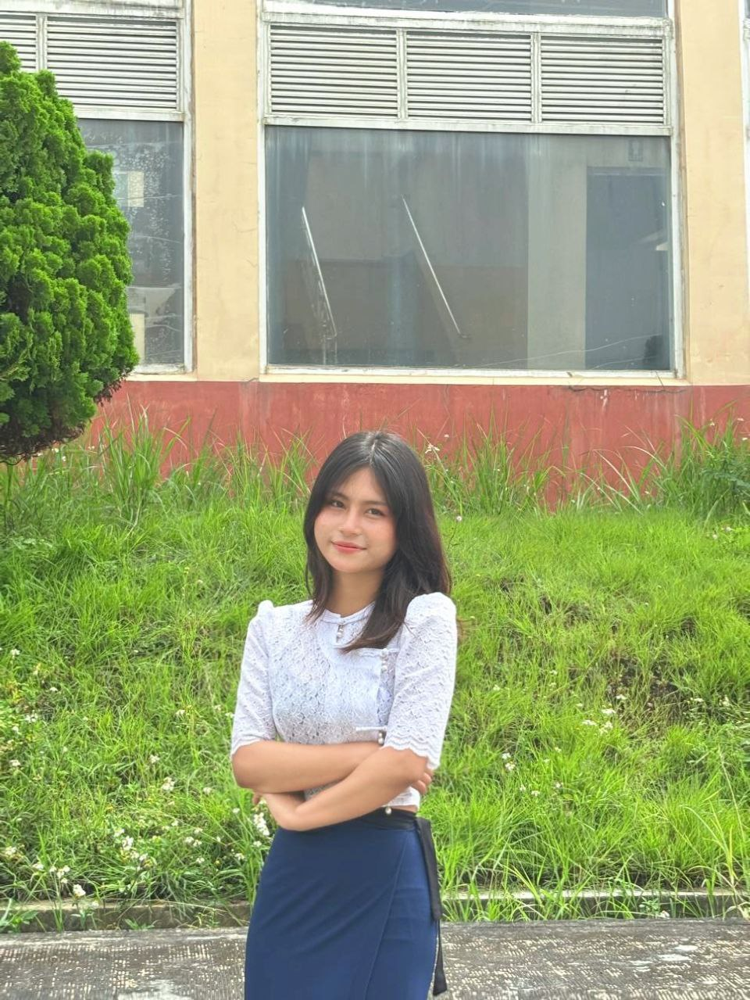
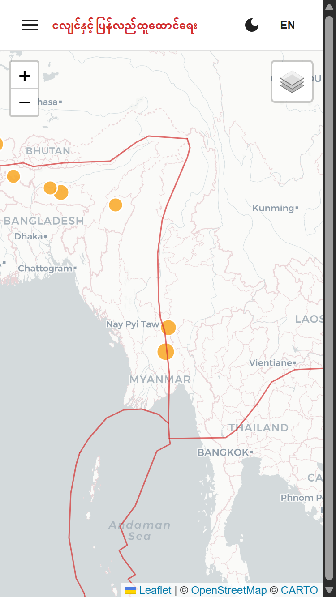
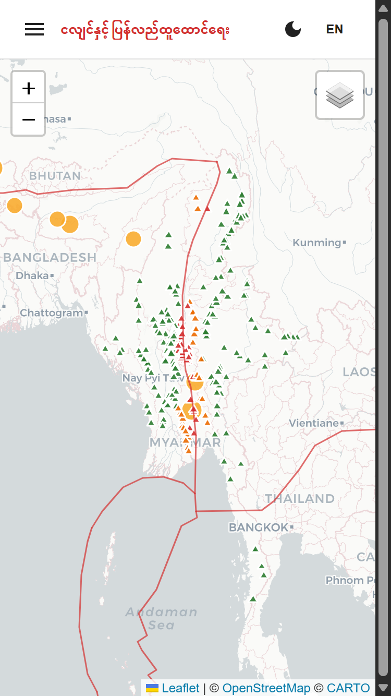

ဖြိုးသီဟ
ဟေမန်
လင်းဘုန်း
ဇွန်ခQR ကုတ်ကို စကင်ဖတ်ပြီး
အပြည့်အစုံ ကြည့်ရှုပါ
ငလျင်များသည် မြန်မာနိုင်ငံတွင် ရုတ်တရက် လာတတ်သည်။ ပြတ်ရွေ့မြောင်းများအနီးတွင် ဆည် ၂၅၄ ခု ရှိနေပြီး လူအများစုသည် အန္တရာယ်ကို မသိကြပါ။
GPS သို့မဟုတ် သိမ်းဆည်းထားသော နေရာမှ ငလျင်လှုပ်ရှားမှုကို စောင့်ကြည့်ကာ အရေးပေါ် ဥဩသံ (Siren) + ဖုန်းအကြောင်းကြားချက်ဖြင့် သတိပေးသည်။


ပျက်စီးမှုစစ်ဆေးခြင်း → အာမခံ/အကူအညီ → ပိုခိုင်မာအောင် ပြန်တည်ဆောက်ခြင်း အဆင့်ဆင့် လမ်းညွှန်။ လှူဒါန်းနိုင်သော နည်းလမ်းများ (KBZ Pay, Wave Pay, KPay, Crypto…)။